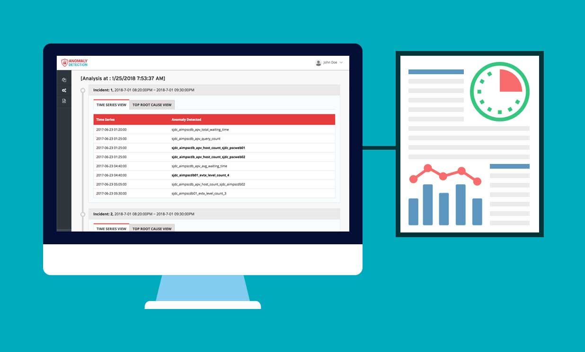
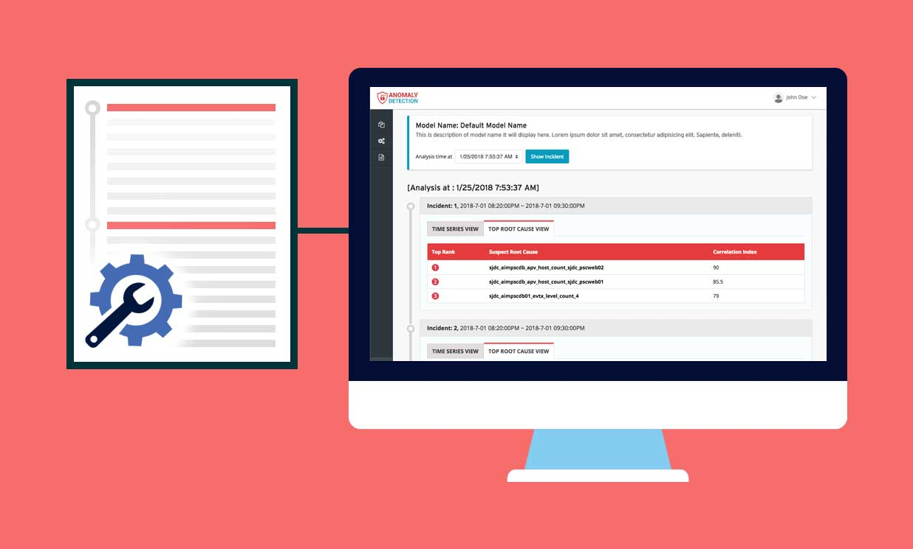
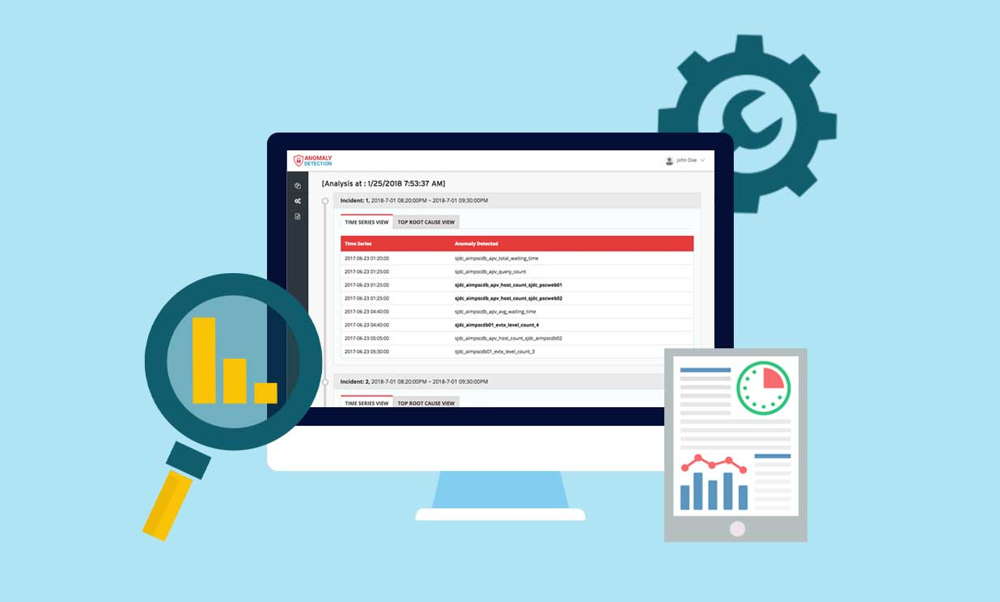

TIME SERIES REVIEW
Review your server incidents by time series and suspicious data
Our machine learning engine empowers your server incidents to be reviewed in a manageable and actionable view.

TOP ROOT CAUSES
Find the most suspicious data for troubleshooting
OWe learn from your data and analyze the top root causetime candidates for you to review. Save hours of for troubleshooting.

MANAGE AND DETECT
Easy to manage, smart in detection
Manage all servers with transparency, and get to detect all possible factors that may endanger your on-premise services.
Try Trend Org Anomaly Detection today
TRY IT FOR FREE- Copyright © 2018 Trend Org Incorporated. All rights reserved.
- Trend Org Anomaly Detection